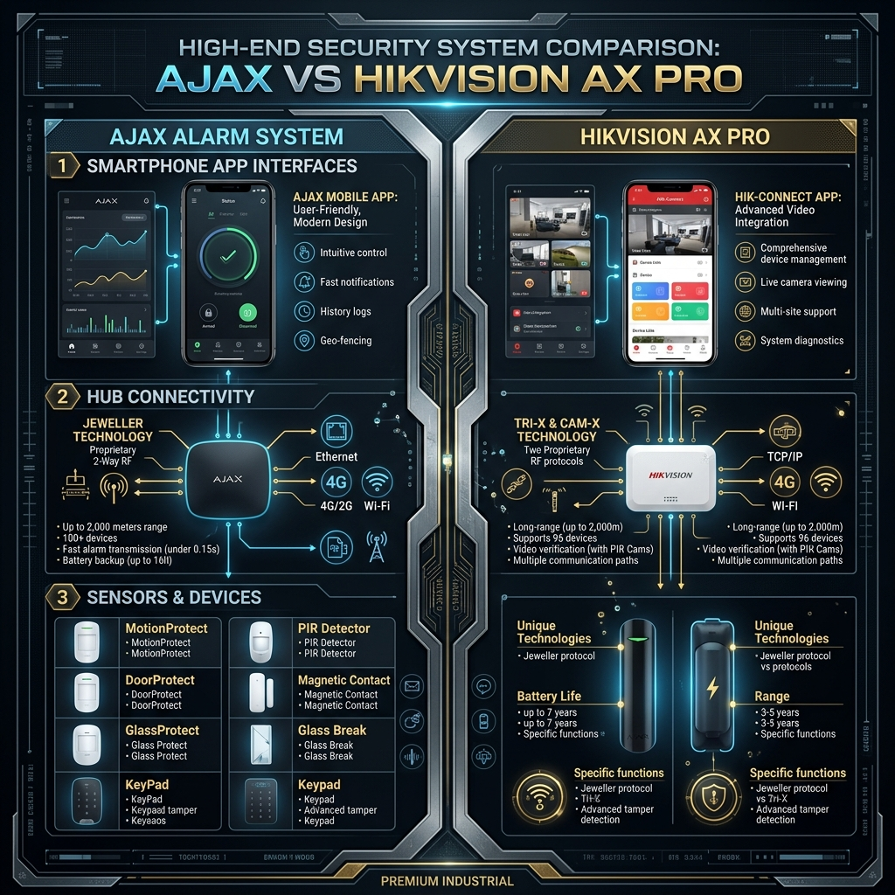

In 2026, the security industry has reached a point where legacy systems are no longer viable for high-end residential protection. We are seeing a massive shift towards forensic-grade data capture and sub-millisecond AI response times.
| Hardware / Standard | Legacy Grade | 2026 Elite Standard |
|---|---|---|
| Data Throughput | 10/100 Mbps | 10 Gbps (Cat7 Backbone) |
| AI Detection Rate | 70-80% (PIR only) | 99.9% (PIR + Deep Learning) |
| Encryption Standard | None / Proprietary | AES-128 Bit Dynamic |
Forensic Implementation Strategy
Our methodology focuses on the elimination of single points of failure. By deploying the Ajax Hub 2 Plus alongside Hikvision ColorVu G2 cameras, we create a multi-layered security mesh. In regional hubs like Leeds and Sunderland, we further protect these systems with LSZH (Low Smoke Zero Halogen) shielded cabling to ensure compliance with the latest fire safety and data integrity standards.
The 2026 Verdict
The forensic audit is clear: Upgrading to WiFi 7 or Cat7 infrastructure is the only way to future-proof your property against the evolving threats of high-speed frequency jamming and network congestion.